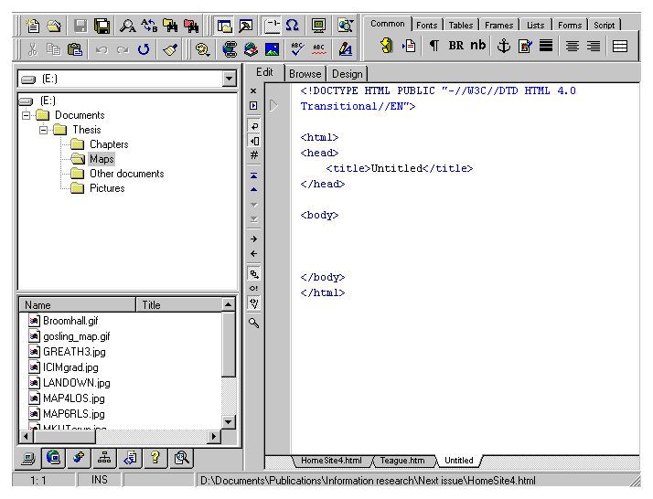

HomeSite 4.0 Cambridge, MA: Allaire Corporation, 1998. CD-ROM and paper manual (Using HomeSite) 125 pp. $99 (£88 inc. VAT) [UK Supplier, Unipalm: 01638-569600]I have been using HomeSite to produce Information Research, off and on, since version 2.0, when it was a shareware product: even then it was easy to use and, for the time, pretty comprehensive as an HTML editor. Allaire then bought the product and employed the developer, turning it into a fully commercial program to partner its Web development software, ColdFusion. HomeSite is now in version 4.0 and offers a fully-featured package for producing Web pages. Happily for me, it assumes that you will want to use HTML code, since I find it quite impossible to use WYSIWYG editors for producing Web pages - I find that I don't have the kind of control over the code that I need, I get all kinds of unnecessary garbage in the coding and haven't any idea as to what is going on. The manual describes the package as: ...a rapid development tool for Web developers of all levels. It provides the fastest way to integrate HTML, DHTML, and media elements into an attractive, effective Web site. You can quickly prototype a site, build one from scratch, or make over an existing site using HomeSite's powerful editing tools. It also offers an impressive set of features for remote development and site maintenance. How does the program shape up to this claim? If you have been happy using a simple HTML editor or even Notepad to generate all the code yourself, then you will find the opening appearance of this package quite welcoming. The basic Edit pane is uncluttered and can be configured to be entirely empty or to have a basic page template with the basic structure shown in Figure 1, or a custom template of your own design. The secondary pane on launching the product, is the Resource Tab, which lists the system directory and, in a secondary pane, the files in the hightlighted directory. Clicking on one of these 'resources' brings it into the Edit window, where it appears in HTML code with the various tags colour coded - unless you have changed the settings. In fact, a point to be made early on, you can configure HomeSite to your heart's delight. Just about every feature can be customised to your own specification, if you do not like the defaults. 
Figure 1: The HomeSite opening screen
The Resource Tab has a menu at the base, which allows you to display the system directory, remote resources (enter FTP and RDS servers for working remotely within HomeSite, rather than using a separate FTP package to download the files), projects (e.g., I could turn the Information Research Web-site into a project), site view - showing the links to other files from the file being edited (but only within one level of the existing page, rather than across and entire site), 'snippets' - stored blocks of code for re-use, the Help structure, and the Tag Inspector (of which, more later). If you are accustomed to using Notepad as your editor, you can use HomeSite's Edit view in much the same way - ignoring completely the various aids to tag and attribute selection. In fact, you can get rid of the toolbars and the secondary pane and operate in full-screen mode, which reduces the clutter to thin bars at the top of the screen and the left-hand side. Or, you can just dispense with the side pane. However, if you continue to work without using all the aids, you are wasting your money in buying HomeSite. The great virtue of the package, to my mind, is that you can begin with a very simple mode of use and graduate to Dynamic HTML, Javascript and other features and HomeSite will support you all the way. For example, selection of the common tags such as <P>, <BR>, <nbsp>, <B>, <I>, <H1>, <H2> etc. can all be done at the click of a mouse button on the appropriate symbol on the 'Quick Bar', which has a menu of separate bars for common tags, fonts, tables, frames, lists, forms, script, CFML (Cold Fusion Markup Language) and ASP (Active Server Pages) - you can customise these and get rid of those you are unlikely to use. Once you become accustomed to clicking instead of laboriously typing the tags, you won't want to go back - HomeSite will also complete a tag, so that, for example, when you hit the paragraph symbol (¶) HomeSite inserts both <P> and </P>. The Tag Inspector, referred to earlier, provides an expandable view of the tags in the page you are editing. Click on the current tag, e.g., <P> and the panel shown in Figure 2 is displayed.
In HomeSite 4.0, Allaire has introduced the "Design View", a visual development mode. This new feature is being introduced as a productivity enhancement and is not a new strategic direction for HomeSite. This is not an attempt to target users who do not want to learn/use HTML who are probably better off using a WYSIWYG tools such as FrontPage. In some situations (prototyping, initial page layout, quick edits, etc.), it is simply more productive to work visually. I found the WYSIWYG layout useful for putting into this text such symbols as '<' and '>' which have the special function of beginning and ending HTML tags and for which I would have had to discover the HTML equivalent. Using the Design view enabled me to type them in from the keyboard and to find them converted into < and >: automatically when I returned to the Edit view. There are other features of importance in HomeSite: "Codesweeper" is a very handy device which takes your page and formats the tags, indenting them where appropriate and, if you wish, economising on white space between paragraphs, etc.; there is also a validation routine, the results of which appear in a pane at the base of the Edit window and give useful guidance on how to put problems right; there's a spell-checker which runs very quickly and if you use Microsoft Word, you can use its spell-checker instead, from within HomeSite. No doubt there are other features that I've missed up until now, but I'm sure that I'll be using nothing else but HomeSite in the future. To begin with, I thought that the extensive Help file had no search or Find routine because it does not appear as part of the Help drop down menu: but, in fact, the Search button is a small icon that appears at tp of the Help pane. However, it did not do me much good, since when I looked for information on 'file transfer' or 'FTP' or 'remote file' it found nothing. Rather strange, when the FTP facility is provided by one of the Resource buttons.In addition to the Help file with the system, Allaire provide a wealth of information at their company site with free support services, including a Knowledge Base and a Support Forum. All in all, I'm impressed with HomeSite 4.0 - I found it easy to use, it is a fully-featured HTML editor with probably more bells and whistles than many amateurs at the game need. It also has the capability to interact with Allaire's other product, ColdFusion, as well as with the Web development package, Dreamweaver. It comes with a trial version of the latter product and with a number of other third part tools, and a complimentary copy of PaintShop Pro 4.15 - which I prefer to version 5.0, which seems to be less user friendly.My only problem is with the price in the UK: don't ask me why it is listed at almost £30 more in the UK than in the USA - and don't ask me to believe that it costs that much more to ship each copy and hold it in a UK warehouse. I recommend you buy it, but wait until you know someone who is visiting the USA where they will probably be able to pick up a copy discounted by 10-15%. Professor Tom Wilson |